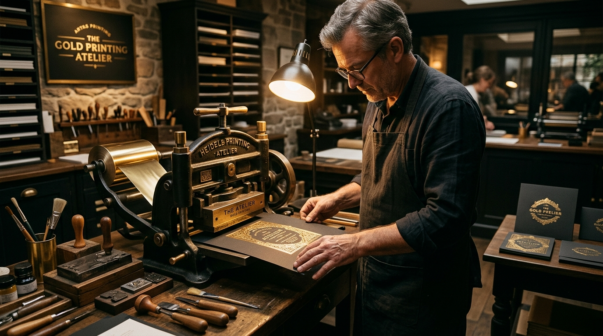

About Atelier Golddruck
Where traditional printmaking craftsmanship meets modern digital metallic technology.
Our Craftsmanship Philosophy
Founded on the conviction that physical printed media should provide an unforgettable tactile experience, Atelier Golddruck specializes exclusively in gold foil stamping, metallic ink lithography, and luxury print finishing.
In a world dominated by transient digital screens, a physical document finished with precision gold foil stands out as an enduring mark of prestige, authenticity, and distinction.

Our Core Atelier Principles
🎖 Uncompromising Quality
Every sheet that leaves our press undergoing 100% manual inspection for registration accuracy, foil adhesion, and edge sharpness.
🎋 Strategic Restraint
We believe true luxury is understated. We help clients position gold elements strategically for maximum aesthetic power.
🌱 Environmental Responsibility
All paper stocks sourced from FSC-certified sustainable forests. Our micro-thin foil coatings are 100% recyclable.
🤝 Tailored Consultation
Our print technicians work directly with graphic designers to advise on die construction, foil tones, and paper matching.
Technology & Equipment
Our atelier houses both classic heavy-duty press machinery and cutting-edge digital finishing tools:
- Heidelberg Windmill & Cylinder Hot Stamping Presses: Delivering up to 40 tons of pressure for deep, crisp foil impression on heavy cardstock.
- Digital Foil Sleeking Units: Enabling rapid turnarounds and variable data gold foil printing without custom metal dies.
- Precision Brass Die CNC Milling: Crafting high-resolution multi-level embossing and foil dies.